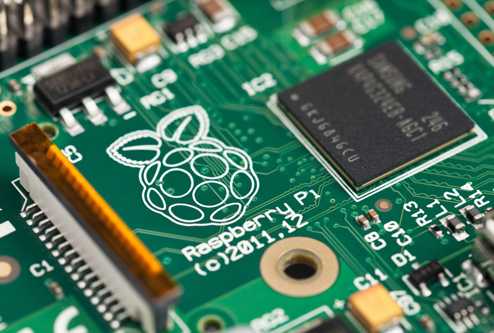
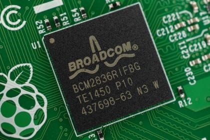
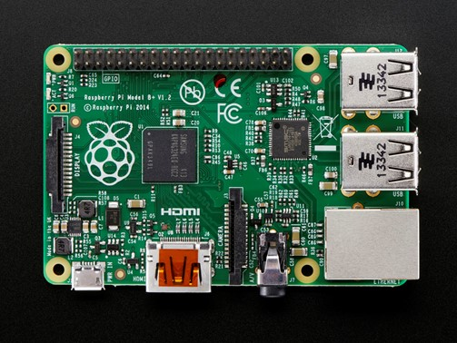
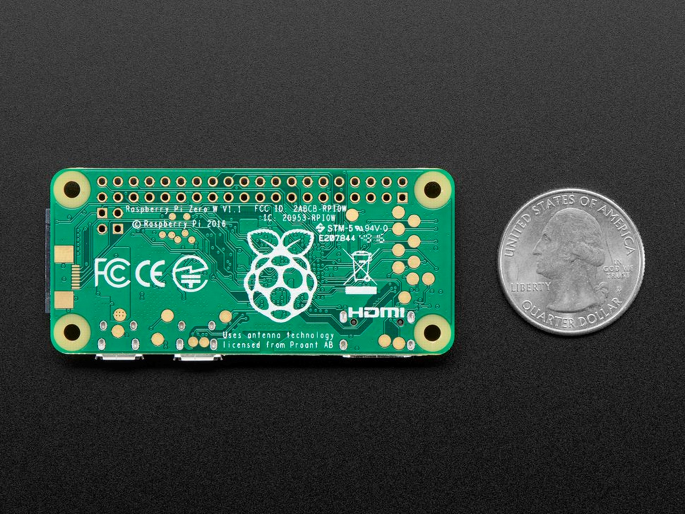

Le Raspberry Pi fut à la base destiné a l'enseignement de la programmation aux jeunes dans les écoles et des dans les pays en vois de développement d'où son prix adorable (35 USD)
Le Raspberry Pi est constitué d'un processeur de type ARM (le même type de processeur trouvé sur les téléphones intelligents) et supporte plurieurs systemes d'exploitation
Officiellement, le Raspberry pi supporte le système d'exploitation Raspbian OS, une modification de la distribution linux Debian développée par The Raspberry Pi Foundation mais plusieurs systèmes d'exploitation tierces sont aussi supportes tel que:
En 2015 sort le Raspberry Pi 2, une verions beaucoup plus puissante de Raspberry Pi qui remplace le processeur simple coeur par un processeur quadricoeur.
En 2014 sort le Raspberry Pi Zero, une version encore plus petite de Raspberry Pi.
